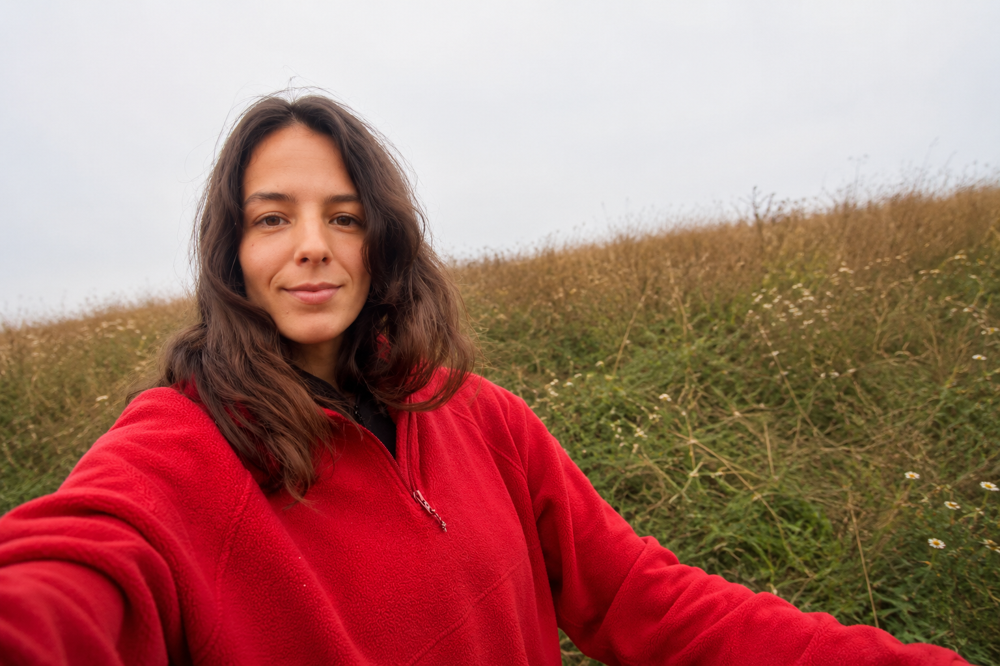

Диана Терещенко
Преподаватель английского языка · Языковой коуч
Diana Tereshchenko
English Teacher · Language Coach

Let's hear it
Если вы не уверены в произношении, просто введите слово или фразу ниже. Я произнесу их для вас.
Язык меняет не только то, как мы говорим.
Он меняет то, как мы живём.
Через язык мы знакомимся с людьми, понимаем другие культуры, находим своё место в новых странах и открываем возможности, которые раньше казались недоступными.
Мне всегда было интересно не столько преподавать английский, сколько наблюдать за тем, как меняется человек, когда язык перестаёт быть препятствием и становится частью его жизни.
Я училась в США и Гонконге, жила в Южной Африке, работала с международными командами и каждый раз убеждалась в одной простой вещи: язык гораздо больше, чем слова и правила.
Это уверенность, свобода и любопытство к миру.
Сегодня я работаю с людьми, для которых английский не очередной пункт в списке задач, а инструмент для жизни. Кто-то готовится к переезду. Кто-то выходит на международный рынок. Кто-то хочет свободно чувствовать себя в путешествиях. А кто-то просто давно мечтает говорить на иностранном языке.
Мне нравится помогать людям находить собственный путь к языку.
Language changes more than the way we speak.
It changes the way we live.
Through language, we meet people, understand different cultures, find our place in new countries, and discover opportunities that once felt out of reach.
What has always fascinated me is not just teaching English, but seeing how people change when language stops being an obstacle and becomes a natural part of their lives.
I studied in the United States and Hong Kong, lived in South Africa, and worked with international teams. Each experience reinforced one simple idea: language is so much more than words and grammar. It is confidence, freedom, and curiosity about the world.
Today, I work with people who see English not as another task on their to-do list, but as a tool for life. Some are preparing for a move abroad. Some are expanding into international markets. Some want to feel more comfortable while traveling. And some have simply dreamed for years of making English a natural part of their lives.
I enjoy helping people find their own path to language learning.
Сейчас я работаю с предпринимателями, специалистами и студентами. Готовлю к IELTS, помогаю с профессиональной коммуникацией, выступлениями и переговорами на английском языке.
Today, I work with entrepreneurs, professionals, and students. I prepare students for IELTS and help with professional communication, presentations, and negotiations in English.
Почти всегда моя работа начинается не с вопроса «Какой у вас уровень?», а с вопроса «Зачем вам язык и какое место вы хотите, чтобы он занимал в вашей жизни?»
Almost always, my work begins not with the question "What is your level?", but with the question "Why do you need a language and what place do you want it to take in your life?"
Для путешествий, общения, переезда и повседневной уверенности в языке
Для встреч, переговоров, презентаций, интервью и международных команд
Конкретный результат и системная подготовка
Собственный подход к изучению языка и желание встроить его в свою жизнь
Не знаете, с чего начать?
Обычно все начинается с разговора